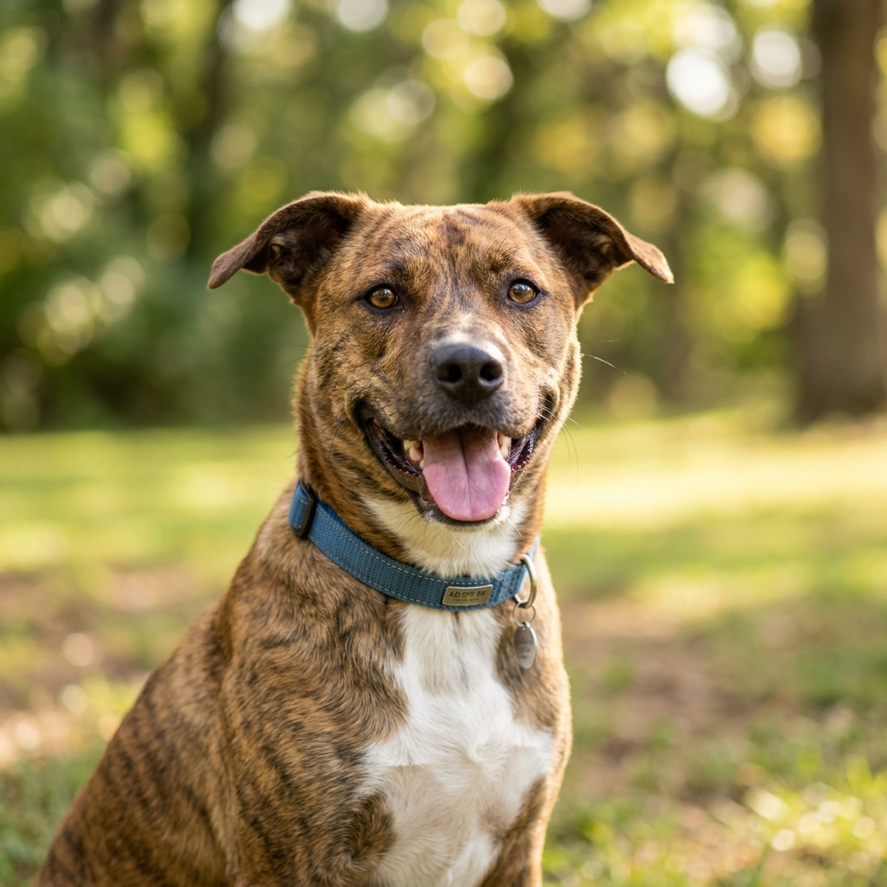
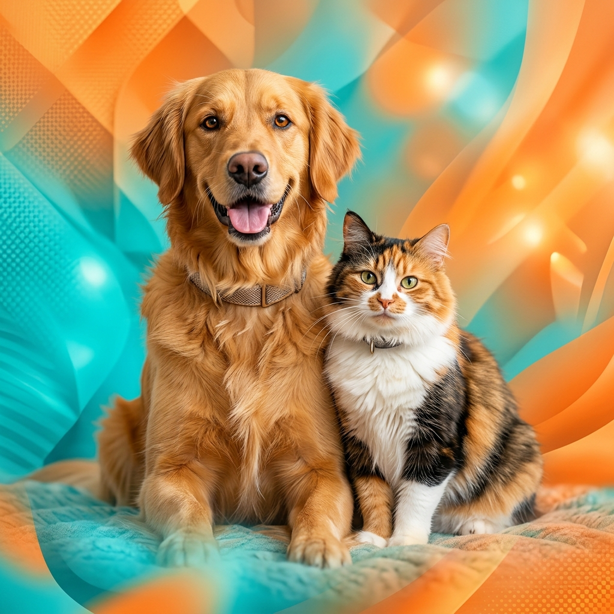
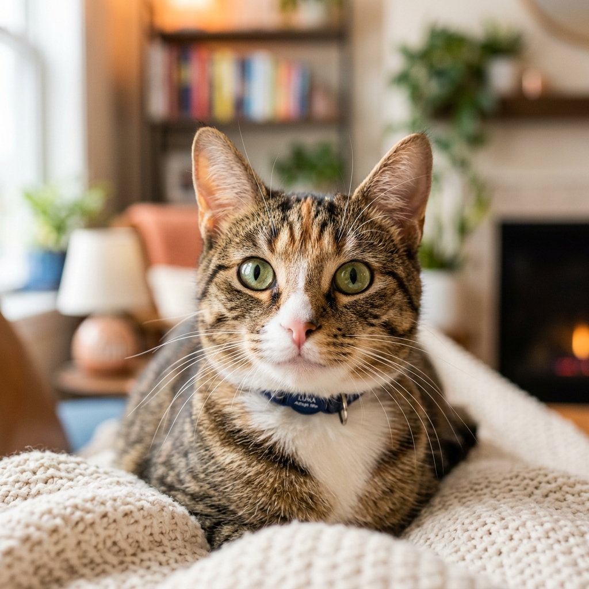
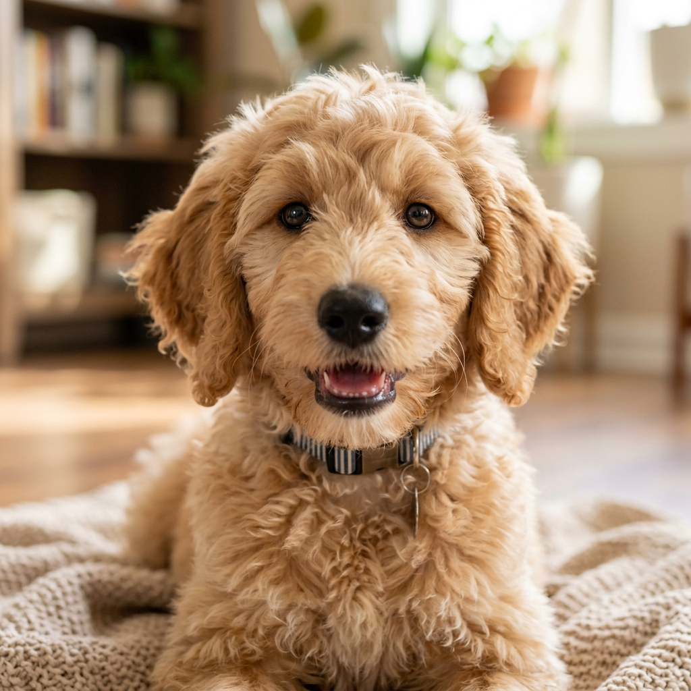

LealLucas
pets 3 Años • Perro
Un chico amigable y lleno de energía, ideal para familias activas que amen los paseos largos.
ConócemeEn MyPet, conectamos familias responsables con mascotas increíbles que están esperando una segunda oportunidad. Tu nuevo mejor amigo te está esperando.

Vidas Salvadas
Vacunados y Sanos
Voluntarios Activos
Filtra por categoría y encuentra a tu compañero ideal.

Lealpets 3 Años • Perro
Un chico amigable y lleno de energía, ideal para familias activas que amen los paseos largos.
Conóceme
Curiosapets 1 Año • Gata
Cariñosa, ronroneadora y muy curiosa. Le encanta observar todo desde lugares altos.
Conóceme
Juguetónpets 4 Meses • Cachorro
Un cachorrito juguetón que está aprendiendo sobre el mundo. Busca mucho amor y paciencia.
ConócemeUn proceso transparente, diseñado para asegurar el bienestar de todos.
Explora nuestro catálogo y selecciona la mascota que sientas que conecta con tu estilo de vida.
Completa un sencillo formulario y conversa con nuestros expertos para asegurar un buen match.
Firma el acuerdo de adopción, recibe tu kit de bienvenida y comienza una nueva vida juntos.